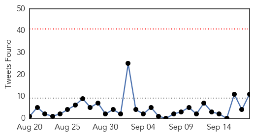

30 Day Trends
Web: 0 alerts, 0 warnings
Twitter: 0 alerts, 0 warnings
Top Articles:
- 1.000
- Acceleration Seen in Ebola Outbreak, Death Toll Exceeds 2,600
- 1.000
- Ebola outbreak: Sierra Leone’s capital to shut down for 3 days to try to halt spread
- 1.000
- Liberia president praises U.S. for Ebola help pledge
- 1.000
- UK Ebola survivor to help save US victim
- 1.000
- CDC-Zim Director Off To Sierra Leone On Ebola Mission
- 1.000
- Ebola crisis: Eight Ebola workers, journalists found dead after attack in Guinea; WHO says outbreak is accelerating
- 1.000
- Sierra Leone to shut down for 3 days to slow spread of Ebola
- 1.000
- Sierra Leone to shut down for 3 days to slow Ebola
- 1.000
- New Ebola Cases Top 700 in Just One Week, Officials Report
- 1.000
- Why We Are Losing the Battle Against Ebola
- 1.000
- No sign of slowdown as ebola kills 2,600
- 1.000
- To stop Ebola killing thousands more, we need doctors who are willing to put their lives on the line
- 1.000
- The powerhouse of West Africa waits for Ebola to strike
- 1.000
- Ebola a threat to national security, public health crisis, says WHO
- 1.000
- Acceleration Seen in Ebola Outbreak, Death Toll Exceeds 2,600
- 1.000
- French MSF Medical Worker Contracts Ebola
- 1.000
- Liberian President Hopes US Ebola Pledge Will Spur Others to Help
- 1.000
- Timeline: Tracing the world's worst Ebola outbreak
- 1.000
- First French Ebola victim to be flown home from Liberia
- 1.000
- UK Ebola survivor to help U.S. patient
- 1.000
- Sierra Leone to combat Ebola with 3-day shutdown when residents must stay home
- 1.000
- Ebola declared threat to peace and security by UN
- 1.000
- Ebola 'threat to world security'- UN Security Council
- 1.000
- Nigerian released from Vietnamese hospital after no Ebola signs found
- 1.000
- Sierra Leone Plans Three-Day Shutdown To Slow Ebola
- 1.000
- Protests, profits and Ebola
- 1.000
- Could Ebola Mutate to Become Airborne?
- 1.000
- Ebola spirals out of control in West Africa
- 1.000
- Liberia president praises US for Ebola help pledge
- 1.000
- Ebola in West Africa
- 1.000
- TIMELINE - Worst Ebola outbreak on record tests global response
- 1.000
- Sierra Leone to shut down for 3 days to slow Ebola
- 1.000
- Acceleration Seen in Ebola Outbreak, Death Toll Exceeds 2,600
- 1.000
- UNSC Adopts Resolution Calling to Lift Border Restrictions on Ebola Affected Countries
- 1.000
- Eight members of Ebola prevention team killed in Guinea
- 1.000
- CDC Zimbabwe director to head Ebola response team in Sierra Leone
- 1.000
- Ebola outbreak: Malta rejects ship carrying suspected case
- 1.000
- CHRONOLOGY-Worst Ebola outbreak on record tests global response
- 0.999
- UN calls Ebola a threat to international peace
- 0.999
- Which Contagious Diseases Are The Deadliest?
- 0.999
- France to receive first Ebola patient
- 0.999
- Australia pledges USD 6.4 million to fight Ebola
- 0.999
- Muslim pilgrims checked for Ebola virus on their way to Mecca
- 0.999
- Ebola patients buy survivors' blood from black market
- 0.999
- Sri Lanka donates medical examination gloves to Ebola-stricken countries - Liberia
- 0.999
- UN and WHO warn of coming massive Ebola outbreak
- 0.999
- Suspected Ebola case ruled out in Lithuania - Xinhua
- 0.999
- 700 new #Ebola cases emerge in one week
- 0.999
- New Ebola Cases Top 700 in Just One Week, Officials Report
- 0.999
- Vietnam under threat of new diseases
Showing top 50 articles...
Top Tweets:
- 0.853
- RT: .@kakape 400 Ebola cases in one day? That 1-day total is bigger than all but 1 of the Ebola & Marburg outbreaks ever r…
- 0.823
- disease forecasting : see our recent assessment of Ebola outbreak in West Africa: http://t.co/OMc3XuzuiZ
- 0.652
- 6 months into the outbreak the response to Ebola could be better! Watch this space for insights and solutions from West Africa and beyond.
- 0.634
- RT: Dr Chan: This [Ebola outbreak] is likely the greatest peacetime challenge that the and its agencies have ever faced
- 0.633
- RT: Ebola Prevention; How UNICEF is helping communities in West Africa avoid exposure to ebola http://t.co/bTst73hfgq http://t.c…
- 0.589
- RT: Death toll in West Africa Ebola epidemic reaches 2622: WHO http://t.co/EziOwfKgZz
- 0.576
- RT: We are distributing food in SierraLeone now until 9/21 the end of the 3 day lockdown to curb the spread of Ebola http:…
- 0.544
- This DiseaseDetective is a double threat to Ebola outbreak in Sierra Leone: she has an MD & was born in Africa. http://t.co/zA1NwHsxyO
- 0.532
- Today's Ebola numbers - growing exponentially :( endebolanow stopebola ebola http://t.co/6xr5iFXEHr
- 0.518
- Here are the Ebola numbers as of today September 18th. endebolanow ebola stopebola westafrica http://t.co/5LwX62tnzB
- 0.503
- Temporal Variations in the Effective Reproduction Number of the 2014 West Africa Ebola Outbreak http://t.co/9ZgqzQ1hQf
Web/News Articles

Tweets
Article Locations

Article Confidences